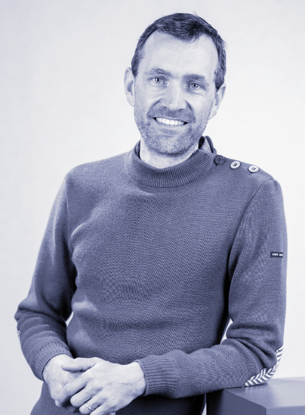

Professor of Finance, emlyon business school
I am a professor of finance at emlyon business school and an affiliated professor at the ENS de Lyon, within the CERGIC.
My research interests include supervised learning for financial economics, sustainable equity investing and, more generally, the impact of AI on organizations.

Professor, emlyon business school
Associate Professor, emlyon business school
Assistant Professor, Montpellier Business School
Senior Quantitative Researcher, EDHEC-Risk Institute
Head of AI Automation, cascad
Board member, Association Française de Finance (AFFI)
Head of the AIM Institute (AI and Management), emlyon business school
Head of the QUANT research center, emlyon business school
Accreditation to supervise research (French HDR), Univ. Lyon 2
Ph.D. in Finance & Applied Mathematics, ESSEC Business School & Univ. Lille 1
Master of Science in Probability and Finance, Sorbonne Univ. (ex-Univ. Paris 6 UPMC)
Master of Science in Market Finance, Univ. Paris 1
Master of Science in Management, ESSEC Business School